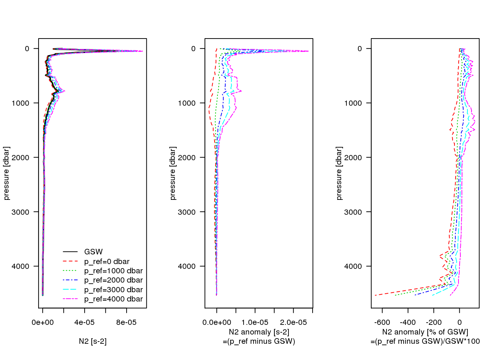

N2 confusion
Chapter 1 N2 confusion
#graphics.off(); # <-- no plots are shown if not commented
rm(list=ls())
# example ctd
if (F) {
dataname <- "example_ctd"
data(ctd)
z <- ctd@data$depth # m, positive downward --> need abs() in dz calc below
p <- ctd@data$pressure # dbar
t_insitu <- ctd@data$temperature
sp <- ctd@data$salinity
lon <- ctd@metadata$longitude
lat <- ctd@metadata$latitude
# levitus
} else if (T) {
dataname <- "woa18"
t_insitu_woa_ncin <- nc_open("/work/ba0941/a270073/data/WOA/2018/woa18_decav_t00_04.nc")
sp_woa_ncin <- nc_open("/work/ba0941/a270073/data/WOA/2018/woa18_decav_s00_04.nc")
lons <- t_insitu_woa_ncin$dim$lon$val # -180,...,180°
lats <- t_insitu_woa_ncin$dim$lat$val
z <- t_insitu_woa_ncin$dim$depth$vals # m, positive downward --> need abs() in dz calc below
select_from_lon_lat <- c(lon=-20, lat=47.4)
select_from_inds <- c(which.min(abs(lons - select_from_lon_lat["lon"])),
which.min(abs(lats - select_from_lon_lat["lat"])))
lon <- lons[select_from_inds[1]]
lat <- lats[select_from_inds[2]]
message("lon: ", lon)
message("lat: ", lat)
p <- gsw_p_from_z(z=-z, latitude=lat) # dbar
sp <- ncvar_get(sp_woa_ncin, "s_an",
start=c(select_from_inds[1], select_from_inds[2], 1, 1),
count=c(1, 1, length(p), 1))
t_insitu <- ncvar_get(t_insitu_woa_ncin, "t_an",
start=c(select_from_inds[1], select_from_inds[2], 1, 1),
count=c(1, 1, length(p), 1))
# remove NA at depth
if (any(is.na(sp))) {
inds <- which(is.na(sp))
z <- z[-inds]
p <- p[-inds]
sp <- sp[-inds]
t_insitu <- t_insitu[-inds]
}
}
## lon: -20.125
## lat: 47.375
sa <- gsw_SA_from_SP(SP=sp, p=p, long=lon, lat=lat)
ct <- gsw_CT_from_t(SA=sa, t=t_insitu, p=p)
# default TEOS-10 way to calc N2
message("calc gsw N2 with locally referenced density ...")
## calc gsw N2 with locally referenced density ...
N2_gsw <- gsw_Nsquared(SA=sa, CT=ct, p=p, latitude=lat)
# using reference pressures to calc N2
g <- gsw_grav(latitude=lat, p=p)
ps <- c(0, 1000, 2000, 3000, 4000) # dbar
N2_own <- array(NA, c(length(p) - 1, length(ps)))
colnames(N2_own) <- paste0(ps, "dbar")
p_mid_own <- (p[2:length(p)] + p[1:(length(p)-1)])/2
print(identical(N2_gsw$p_mid, p_mid_own))
## [1] TRUE
sa_at_p_mid <- (sa[2:length(p)] + sa[1:(length(p)-1)])/2
ct_at_p_mid <- (ct[2:length(p)] + ct[1:(length(p)-1)])/2
rho_insitu_at_pmid <- gsw_rho(SA=sa_at_p_mid, CT=ct_at_p_mid, p=p_mid_own)
# upper minus lower
dz <- abs(z[1:(length(z)-1)] - z[2:length(z)])
for (pp in 1:length(ps)) {
message("calc own N2 with ref pressure ", ps[pp], " dbar ...")
rho_pot <- gsw_rho(SA=sa, CT=ct, p=ps[pp])
# upper minus lower
drho_pot <- rho_pot[1:(length(rho_pot)-1)] - rho_pot[2:length(rho_pot)]
N2_own[,pp] <- -g/rho_insitu_at_pmid * drho_pot/dz
}
## calc own N2 with ref pressure 0 dbar ...
## calc own N2 with ref pressure 1000 dbar ...
## calc own N2 with ref pressure 2000 dbar ...
## calc own N2 with ref pressure 3000 dbar ...
## calc own N2 with ref pressure 4000 dbar ...# plot
#png(paste0("n2_confusion_", dataname, ".png"), width=3000, height=2000, res=400)
par(mfrow=c(1, 3))
# absolute N2
xlim <- range(N2_gsw$N2[is.finite(N2_gsw$N2)],
N2_own[is.finite(N2_own)]) # s-2
ylim <- rev(range(p)) # dbar
plot(N2_gsw$N2, N2_gsw$p_mid,
xlim=xlim, ylim=ylim, t="l",
xlab="N2 [s-2]", ylab="pressure [dbar]",
yaxt="n", lwd=2)
axis(2, las=2)
for (pp in 1:length(ps)) {
lines(N2_own[,pp], N2_gsw$p_mid, col=pp+1, lty=pp+1)
}
legend("bottomright", c("GSW", paste0("p_ref=", ps, " dbar")),
col=c("black", 1+(1:length(ps))), lty=c(1, 1+(1:length(ps))),
bty="n")
# N2 anomaly own minus gsw
N2_anom <- N2_own - replicate(N2_gsw$N2, n=length(ps))
xlim <- range(N2_anom, na.rm=T) # s-2
ylim <- rev(range(p)) # dbar
plot(N2_anom[,1], N2_gsw$p_mid,
xlim=xlim, ylim=ylim, t="n",
xlab="N2 anomaly [s-2]\n=(own minus GSW)", ylab="pressure [dbar]",
yaxt="n")
axis(2, las=2)
for (pp in 1:length(ps)) {
lines(N2_anom[,pp], N2_gsw$p_mid, col=pp+1, lty=pp+1)
}
# N2 anomaly own minus gsw as percentage of N2 gsw
N2_anom_percent <- N2_anom/replicate(N2_gsw$N2, n=length(ps))*100
xlim <- range(N2_anom_percent, na.rm=T) # %
ylim <- rev(range(p)) # dbar
plot(N2_anom_percent[,1], N2_gsw$p_mid,
xlim=xlim, ylim=ylim, t="n",
xlab="N2 anomaly [% of GSW]\n=(own minus GSW)/GSW*100", ylab="pressure [dbar]",
yaxt="n")
axis(2, las=2)
for (pp in 1:length(ps)) {
lines(N2_anom_percent[,pp], N2_gsw$p_mid, col=pp+1, lty=pp+1)
}
#dev.off()